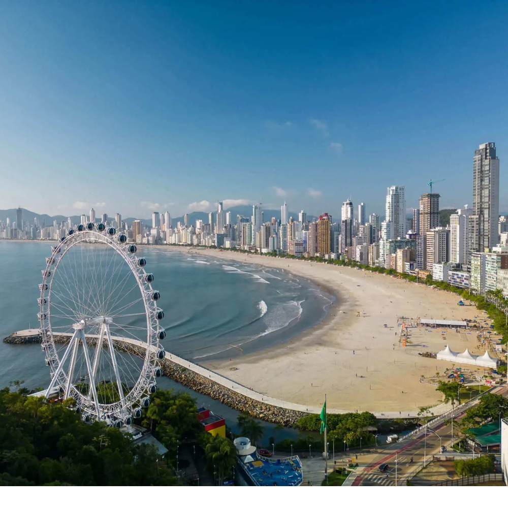

O Santa Catarina pertence à Região Sul do Brasil e sua capital é Florianópolis.O estado destaca-se por apresentar um dos maiores Índices de Desenvolvimento Humano (IDH) do país, com uma economia forte e diversificada no turismo, na indústria têxtil, de tecnologia e na agropecuária. Geograficamente, oferece um contraste marcante entre o litoral famoso por praias como Balneário Camboriú e a serra catarinense, que registra algumas das temperaturas mais baixas e ocorrência de neve no inverno brasileiro. Culturalmente, possui forte herança de imigrantes alemães, italianos e açorianos, refletida na arquitetura, na gastronomia e em grandes festas como a Oktoberfest de Blumenau.

Voltar